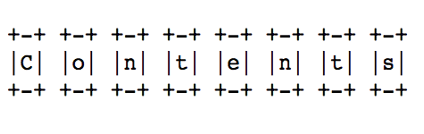
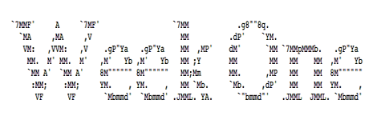
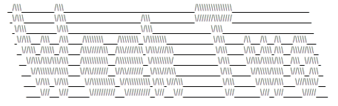
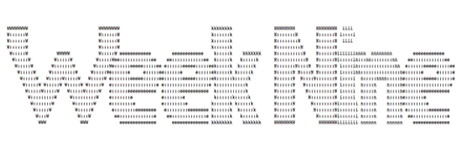
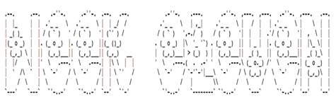

What we call a videogame is not a product. It's the creation of an author and her accomplice, the player; it is handmade by the former and personally distributed to the latter. The videogame is a zine. -- Anna Anthropy, Rise of the Videogame Zinesters
This seminar is about literary and cultural approaches to prototyping indie games—games as gifts, letters, ephemera, hacks, souvenirs, mix tapes, commentaries, glitches, jokes, tricks, satire, memoirs, self-care, lo-fi, bit collage, accidents, performances, activism, zines . . . We'll play some games, read some history and critical theory, and experiment with an array of design and development techniques from paper to screen. Early in the term, you'll select a few "-isms" (e.g., Futurism, Minimalism, and Surrealism) from the nineteenth and twentieth centuries that will inform your approaches to prototyping throughout the seminar, and by the end you'll create and share your own indie games, complete with their own user manuals. In the process, you'll learn about the intersections of new media with art, literature, and politics, and we'll demystify the popular assumption that only a "select few" can make games. I will not assume that you are a gamer, want to be a gamer, have ever made an indie game, or know how to develop or design games. I will also not assume that you've taken a course in digital studies. Technical competency required: know how to send an email.
As you play games throughout the term, I encourage you to support the authors and developers, most of whom accept donations via Patreon or the like.


WEEK 1 (SEPT 7): GAMES + ZINES
What if some games, and the more general concept of "play," not only provide outlets for entertainment but also function as means for creative expression, as instruments for conceptual thinking, or as tools to help examine or work through social issues? -- Mary Flanagan, Critical Play: Radical Game Design
During our first meeting, we'll introduce ourselves, talk about indie games and zines, and work our way through Anthropy's book. We'll also discuss how you can log (or document) your research and prototyping throughout the term. And before we leave, we should chat about forming groups. You don't have to write a seminar paper for this course, and you only have a few assignments; however, 85% of your final mark is based on collaborative work. I made this decision because collaboration is important to research in the humanities (even tho it is taught infrequently in literary and cultural studies), and games are rarely produced alone.
WORKSHOP: Logging your work in a text editor (Sublime + Markdown)
READ: Anna Anthropy's Rise of the Videogame Zinesters (at the UVic Bookstore)
PERUSE: Bingham Center Zine Collections' "A Brief History of Zines" + Lana Polansky's Sufficiently Human + Arnaud De Bock et al.'s PICO-8 + Alexandra Orlando (ed.) et al.'s First Person Scholar + merritt k's Forest Ambassador + Gareth Damian Martin (ed.) et al.'s Heterotopias + Lilith's website (Cicada Marionette) (including Oneiric Gardens) + Lewis Pulsipher's Glossary for Game Designers
^^^ top of page ^^^

WEEK 2 (SEPT 14): -ISMS + SPECULATIONS
Design your game first, and then add the technology necessary to make it happen. -- Tracy Fullerton, Game Design Workshop: A Playcentric Approach to Creating Innovative Games
We'll begin our second meeting with a discussion of the various -isms you researched since last week. After that, we'll talk about speculative design (see Kraus) and games as art (see Pearce). We'll conclude with a low-tech workshop on paper prototyping, which may help you to foreground your ideas and designs without getting caught up in the whiz-bang of software, engines, consoles, and the like.
WORKSHOP: Paper prototyping (see Una Lee and Paolo Pedercini's "A Computerless Videogame Modding Workshop")
READ: Kari Kraus's "Finding Fault Lines" (including "Family of Subjunctive Practices") + Celia Pearce's "Games as Art: The Aesthetics of Play" (via Visible Language)
PLAY (some games for/about groups): Ghost Town's Overcooked + Brendan Keogh's One Button Real Time Twenty-Six Player Party Golfing + Derek Yu's Spelunky + Asteroid Base's Lovers in a Dangerous Spacetime
LOG: Form your groups. Research some -isms (1870-1970). Write about them. Pick your -ism for the term. Write about Kraus and Pearce. Before you begin your log, please form groups of two to four people. You might also want to start accounts with Itch and Steam and install Unity and Flash players for your preferred browser. Once you are in a group, collectively research at least five -isms active at any point between 1870 and 1970. (Mary Ann Caws's Manifesto: A Century of Isms is a good resource here.) For each -ism, note in your log the: 1) dates of activity (rough start and end dates), 2) names of participants/contributors, 3) titles of key publications and works of art (including literature, painting, sculpture, film, design, and manifestos), and 4) aesthetic and political particulars (including a sentence or two about how each -ism blended aesthetics with politics). Once you are finished logging this information, please decide as a group which of the five -isms you'd like to study and reference throughout the term. You might want to consider matters of content, context, and design. What's curious? What's relevant today? What will keep you interested for four months? Communicate your decision (including your selected -ism) in your log. Also, to prep for our seminar discussion on speculative design and games as art, in your log please share (in your own words; only a sentence or two) an important argument that Kraus makes. Do the same with Pearce, and alongside these arguments please articulate at least two specific questions you have in response to these two texts. Your questions may address everything from assumptions made in the arguments to the potential effects of those arguments on critical or creative practice.
^^^ top of page ^^^

WEEK 3 (SEPT 21): HACKS + CHEATS
Hardware hacking enables a creative form of gameplay that does not necessarily follow the routine interactions intended by game companies. -- Nina Belojevic, "Circuit Bending Videogame Consoles as a Form of Applied Media Studies"
I'd like to begin this meeting with a discussion of Phillips's work on games and social justice. The notion of a hack or cheat may intersect nicely with her remarks about games. Then we'll transition into conversations about your gameplay logs. The second half of the meeting will focus on modding existing games and bending/changing game templates. Modding games helps to lower the barrier of entry to game development, and its motivations also correspond with critical practices in fields such as cultural studies. We'll look at somewhat accessible applications such as GameSalad and perhaps Stencyl. I'll also draw modding material from some open source HTML5 games (as an intro for those who are new to coding).
WORKSHOP: Modding and bending videogames (HTML5 + GameSalad + Stencyl)
READ: Amanda Phillips's "Game Studies for Great Justice" + Mia Consalvo and Nathan Dutton's "Game Analysis: Developing a Methodological Toolkit for the Qualitative Study of Games" + Raph Koster's "How I Analyze a Game"
PLAY (some notable hacks and mods): Elizabeth LaPensée's Invaders + The Chinese Room's Dear Esther (a mod of Half Life 2) + Davey Wreden's The Stanley Parable (also a mod of Half Life 2) + Cory Arcangel's Super Mario Clouds (files)
LOG: Play a game. Document it. Watch your documentation. Describe it. Write about Phillips. For this log entry, I'm asking you to perform your first of two gameplay logs this term. As a group, please select a videogame of your choice. Ideally it's an indie game, but I'm open. Please play the game together (online or F2F) for at least an hour. It may be multiplayer, co-op, turn-based, or even single-player (with people watching and even commenting). Please document the play process using video or audio, and then listen to or watch the documentation. In about 250 words, your group should then respond to the documentation using one or two approaches suggested by Consalvo, Dutton, and/or Koster. For instance, you might focus on the unexpected results of play, player suspicion or frustration, when people cheated or tried to cheat, what made players feel good or powerful (and when), what kept people's interests (or didn't), language people used during play, or when and why players helped other players. No need to analyze anything, tho. Just document the social gameplay experience (at least an hour), review it, and write ~250 words describing one or two particular aspects of it. You don't need to submit the video or audio documentation as part of your log, and you should not circulate it online or elsewhere. However, assuming it's ok with everyone in your group, you're welcome to include clips or stills with your log entry. With this exercise, please also communicate one of Phillips's primary arguments in your own words, together with two specific questions you have about her chapter.
^^^ top of page ^^^
WEEK 4 (SEPT 28): INTERFACE + MEDIATION
Games are activities, and activities are best understood when carried out. Playing games is therefore essential when we want to understand games and how they work in practice. -- Kristine Jørgensen, Gameworld Interfaces
We'll dedicate Weeks 4 and 5 to discussions of games as negotiations. This approach will prevent us from reducing indie games to either objects of inquiry (that can be studied without play) or immediate experiences (that are purely immersive or lack critical perspective). We'll talk about approaches to both critical design (see Belojevic) and critical play (see Flanagan), and then we'll circulate and discuss the wireframes from your log. During our workshop, we'll continue prototyping with user interface (UI) wireframing as well as some physical computing techniques. After these two weeks (4 and 5), we'll research and prototype the narrative elements of games.
WORKSHOP: Prototyping UI wireframes and controllers (graph paper, Balsamiq, and RPi or Arduino)
READ: Nina Belojevic's "Circuit Bending Videogame Consoles" + Mary Flanagan's "Critical Play and Responsible Design"
PLAY (some games with interesting interfaces and visual designs): Ian Snyder's The Floor Is Jelly + Emily Short's Bee + Ben Esposito's Pale Machine (with Bo En) + Peter Brinson and Kurosh ValaNejad's The Cat and the Coup + Stephen Lavelle's Mirror Stage + ModLab's Play the Knave + Peter Lu and Lea Schönfelder's Perfect Woman
LOG: Wireframe your interface. Describe it. Write about Belojevic and Flanagan. This is your first log entry where you'll prototype features of your game. First, return to your selected -ism and determine (as a group) the sort of interactions and interfaces it would encourage or endorse. How does your -ism draw boundaries? Involve or engage its audience? Address its medium? What sort of adjectives would you use to describe its blend of aesthetics with politics? Based on your assessment, use graph paper, plain paper, cardboard, or the like to "wireframe" an example interface for a game informed by your -ism. For now, you might want to imagine a screen and machine (anything from a mobile phone to a console attached to a large display) for your game, and then wireframe accordingly. The wireframe should somehow account for how your game and its interface would accept input (e.g., pressing buttons or swiping) and express output (e.g., sounds, movements, and images). Be sure to stick to abstractions such as blocks, windows, and frames for now. No need to include details such as characters, objects, or environments in your visual design. Once you've wireframed an interface, please describe it in ~250 words, attending to: 1) its correspondences with your -ism, 2) how it mediates the relations between not only people and technologies but also input and output, and 3) how you imagine people engaging and responding to your game (via its interface). Alongside your wireframe and description, please share arguments by Belojevic and Flanagan in your own words and articulate two questions in response their work.
^^^ top of page ^^^
WEEK 5 (OCT 5): ACTIONS + MECHANICS
Games, whether digital or analog, function precisely the same way computers do: they are derived from a system of rules that sets forth parameters or constraints for dynamic interaction. -- Celia Pearce, "Games as Art: The Aesthetics of Play"
This meeting will be anchored in the "machine operations" (diegetic and non-diegetic) of games and how those operations are entangled in culture and practice (as opposed to treating them as abstractions or universal procedures). We'll talk about recent calls for everyone to code (see the history Vee presents), and we'll also consider the implications of games as actions (see Galloway). Following last week's workshop on modding games with what-you-see-is-what-you-get (WYSIWYG) software, we'll write and edit a few lines of code and then execute them as games. This workshop will be combined with discussions about the core actions and mechanics of your indie game prototypes.
WORKSHOP: Programming a simple game (JavaScript + HTML5 + Processing)
READ: Annette Vee's "Programming as Literacy" + Alexander Galloway's "Gamic Action, Four Moments" (also see Kriegspiel, a game by Guy Debord and remade by Galloway and RadSoftGroup)
PLAY (some games that do a lot with simple mechanics): Sophie Houlden's Swift*Stitch + merritt k's Lim and Lullaby for Heartsick Spacer + Lucas Pope's Papers, Please + Anna Anthropy's Calamity Annie and dys4ia + Yijala Yala Project's Love Punks
LOG: Identify your core actions. Describe them. Integrate them into your UI wireframe. Write about Vee and Galloway. Most books about game dev and design prompt readers to start with character development and related concept art; however, following Anthropy and Clark, I'm encouraging you to begin with your core actions. Based on what you know about your -ism, what might these actions be, and what role would they play in an indie game? In your log, please identify between two and five core actions for your game. Down the line, you might not integrate them all into your prototype, but it doesn't hurt to experiment with options. For each action, please include the following in your log: a verb, the choices that verb affords (is it complex? robust? simple? restrictive?), and its relation to your -ism (what actions make your -ism interesting, or could make your game unique?). Once you are finished with this list, please also consider your verbs together (as relations) and integrate them however you wish into your UI wireframe from last week. Show how the verbs could be combined (simultaneously or sequentially, as causes and effects, or to encourage repetitive actions such as grinding) to comprise a system of behaviours, triggers, and mechanics that players would need to learn and navigate. While adding your actions to your wireframe, you are also welcome to map them to a controller (such as a keyboard and its binary keys). You could even illustrate your controller layout (with software or pencil) or photograph an existing controller and annotate it. Pick what's most appropriate. Just make sure to include between two and five actions, the choices they afford, their relation to your -ism, and a demonstration of how they would be integrated into your interface and, if you wish, a controller. No need to worry about characters or environments at this point. Just use simple boxes and markers for now, and we'll study and prototype the details later in the term. Also, in your log please include arguments by Vee and Galloway in your own words as well as two specific questions you have about their research and its implications for praxis (or the entanglement of theory with practice).
^^^ top of page ^^^

WEEK 6 (OCT 12): CHANCE + MOTIVATION
Interactivity: it can make a story powerful in new ways, but it's not a guarantee of fun. -- Emily Short, "The Path and Story Pacing"
This week we'll spend most of our time on the question of why people play games and, more specifically, why they might play your indie games. We'll consider issues of leisure and affect (see Anable), motivation (see Yee), and randomness and chance (see Costikyan). During the workshop, you'll prototype some "play personas" for your game and also discuss your experiences observing other people play games. After this meeting, we'll turn our attention to narratives, stories, characters, and scenes in your games.
WORKSHOP: Prototyping play personas (using paper)
READ: Aubrey Anable's "Casual Games, Time Management, and the Work of Affect" + Nick Yee's "A Model of Player Motivations" + Greg Costikyan's "Randomness: Blight or Bane?"
PLAY (some games about games and play): Mordechai Buckman and Kyler Kelly's Gamer Mom + Molleindustria's Game Definitions + Ian Bogost's Cow Clicker + Stephanie Boluk and Patrick LeMieux on Triforce, Memento Mortem Mortis, It Is Pitch Black, 99 Exercises in Style, and Tide Hunter
LOG: Watch people play a game. Take notes. Reflect on that. Your second gameplay log is scheduled for this week. For thirty minutes, watch at least one person in your group play a videogame. Ideally it's an indie game, but I'm open. Document the play session with video, audio, or photography, if you wish; however, you should not include that documentation in your log or circulate it online. As you watch, take notes on one (and only one) of the following: casual gaming and leisure (see Anable), player motivation (see Yee), or randomness (see Costikyan). If you focus on casual gaming and leisure, then observe how the play is linked to affect but also how the game is gendered. If you focus on player motivation, then observe how the play is linked to immersion, social activity, and achievement (or just pick one of these). If you focus on randomness, then observe its aesthetics (e.g., abstract strategy and wargamer) as well as its "good" and "evil" effects on play. After thirty minutes, interview your group member(s) for about ten minutes, asking them two things in particular: 1) why they play the game (or like playing the game), and 2) to clarify anything (e.g., game details) that wasn't obvious to you during observation. When you are done with the observation and interview, write about 50 words reflecting on your observations. Include your notes from the observation and interview in your log alongside your reflection. Your group's log should include notes and reflections for at least two observation sessions involving at least two different players.
SOMETHING'S DUE: Your logs are due this week for mid-term assessment. They should include 1) the names of everyone in your group, 2) evidence of your prototyping and research, 3) your selected -ism, 4) info about that -ism, 5) your UI wireframe(s), 6) a description of that wireframe, 7) your core actions, 8) descriptions of those actions, 9) those actions integrated into your UI wireframe and (if you wish) mapped onto a controller, 10) two gameplay logs (a documentation log that engages Consalvo, Dutton, and/or Koster, and an observation log that engages Anable, Yee, or Costikyan), and 11) brief summaries of and questions about Kraus, Pearce, Phillips, Belojevic, Flanagan, Vee, and Galloway. I should receive one log per group.
^^^ top of page ^^^

WEEK 7 (Oct 19): RULES + STORIES
We impose a pattern, a meaningful sequence, on a set of events, and a story emerges. -- Naomi Clark, A Game Design Vocabulary (with Anna Anthropy)
Our meeting this week will foreground the role of stories, narrative, and experience in indie games (via Salter, Jagoda, and McDonald). We'll base most of our conversations in your prototypes, and we'll step back a bit from the technology to examine how actions and stories come together (or fall apart). This week will also be an opportunity for you to start threading together the various components of your prototype to see what holds, doesn't fit, and seems peripheral or extraneous.
WORKSHOP: Story trees and dialogue (Twine + paper)
READ: Anastasia Salter's "Building Interactive Stories" + Patrick Jagoda and Peter McDonald's "Game Mechanics, Experience Design, and Affective Play"
PLAY (some games anchored in story and experience): Ryan Green et al.'s That Dragon, Cancer + Toby Fox's Undertale + The Fullbright Company's Gone Home + Admiral Jota's Lost Pig
LOG: Pick your software. Give your game a genre and story. Determine how difficult it'll be. Write about Salter, Jagoda, and McDonald. Building on your UI wireframe and core actions, this week your group should file your game under a (sub)genre. Simulation? Fantasy? Stealth? Party game? Text-based adventure? Platformer? Turn-based strategy? Interactive fiction? Racing? Horror? Roguelike? Survival? Tower defense? A blend of genres? As you make this decision, consider your -ism as well as audience expectations and histories of your genre. Together with the genre, use ~250 words to outline a brief story for your game and explain how the story will unfold through rules. (For rules, consider basic if-then and subject-verb-object statements, or you are welcome to express them as code.) What is the game about? What's the conflict, problem, or core issue? What are the rules? The goals? The achievements? How difficult will the game be, and how do notions of difficulty correspond with your -ism? While you write, feel free to situate the story within a narrative structure, if applicable. At some point in this log entry, please also mention the software or language you'll be using to build your playable prototype. And of course, write an argument by both Salter and Jagoda and McDonald in your own words, accompanied by two questions you have about these texts.
^^^ top of page ^^^
WEEK 8 (OCT 26): CONTEXTS + CHARACTERS
What does it mean to represent something or someone in a media context? Often I think people believe representation is just about accurately depicting people of different identities, but the juicy issues are located in how fraught identity is in the first place, and then the warped agendas of representation adds on top of that. -- Mattie Brice, "Using Play for Everyday Activism"
This week we'll discuss the intersections of game prototyping with representation and values. For whom, by whom, and under what assumptions are games authored? What role, if any, should empathy play in games? Here, writing and games by LaPensée and Brice (see below) will inform our conversations. We'll also spend time during our workshop on how characters are modeled and contextualized in 2-D and 3-D games. How are platforms, interfaces, engines, and available "assets" entwined with worldviews, games, game culture, and habits of play?
WORKSHOP: Working with character models, sprites, and layers (Unity)
READ: Elizabeth LaPensée's "Self-Determination in Indigenous Games" (also see We Sing for Healing) + Mattie Brice's "Death of the Player" and "Moving On" (also see Empathy Machine + EAT)
PLAY (some games engaging social justice and decolonization): micha cárdenas's Redshift and Portalmetal + Aboriginal Territories in Cyberspace's Otsi:! | Rise of the Kanien’kehá:ka Legends + E-Line Media's Never Alone
LOG: Sketch your characters and environments. Describe them. Relate them to LaPensée and Brice. Now it's time to put your actions, story, and interface into conversation with some characters and environments. For this log entry, please design and sketch at least two playable characters and at least two visual environments (e.g., landscapes) for your prototype. Again, these elements should be informed by your selected -ism. I encourage you to consider them in isolation for now: playable characters without visual environments, and visual environments without playable characters. Next week, you'll prototype some scenes, which further integrate characters and actions into space and time. You might want to prototype with software, plasticine, or pencil and paper. For each character and environment, please provide visual documentation/illustration (animations or stills), a brief description (~25 words per element), and some remarks (~50 words per element) on how your prototyping engaged or responded to work by LaPensée and Brice. Throughout the process, consider norms, biases, values, embodiment, identification (or interpellation), perspective, and the differences between 2-D and 3-D design as well as first-, second-, and third-person gaming (see the work of Pat Harrigan here). Your characters don't need to be protagonists or humans, and your environments don't need to be passive landscapes, backgrounds, or resources. They don't need to be intricate or complex, either. Feel free to keep it simple.
^^^ top of page ^^^

WEEK 9 (NOV 2): SCENES + CINEMA
As we embody ourselves digitally, participate in modding our own UIs, inhabit specific server communities—all the grainy specificity of our work—we are ourselves embedded in a particular assemblage of play. We do not stand outside of it. -- T.L. Taylor, "The Assemblage of Play"
Description
WORKSHOP: Working with scenes, levels, cameras (Unity)
READ: Noah Wardrip-Fruin's "Expressive Processing: Interpretation and Creation" + Steven Shaviro's "Splitting the Atom: Post-Cinematic Articulations of Sound and Vision"
PLAY (some games with experimental narratives, levels, scenes, and pacing): Tarn Adams and Zach Adams's Dwarf Fortress + Blendo's Thirty Flights of Loving + Robert Yang's Intimate, Infinite + Playdead's Limbo + tinyBuild's Speedrunners
LOG: Build your inventory. Integrate it, your characters, and your environments into your UI wireframe. Write about Wardrip-Fruin and Shaviro. This week, your group should develop an inventory of objects that your characters and environments may use to facilitate actions. Your inventory should include between five and ten objects. Perhaps your characters collect or carry them, or maybe your environments contain or eat them. Use software, plasticine, or pencil and paper to prototype these objects and include them in your log together with ~50 words describing the inventory and its relation to your -ism. Once you've compiled and described your inventory, integrate it, your characters, and your environments (from last week) into your UI wireframe. (At this point in the term, you might want to prototype with your selected software.) Include this new wireframe (with actions, characters, environments, and objects) in your log entry. With it, please provide arguments by Wardrip-Fruin and Shaviro in your own words, together with two questions you have about their work.
^^^ top of page ^^^
WEEK 10 (NOV 9): SOUNDS + MOODS
Text as a waveform has creative and poetic uses. -- Allison Parrish, "Lossy Text Compression, for Some Reason?!?!"
Description
WORKSHOP: Editing audio (Audacity)
READ: Tara Rodgers's "Approaching Sound" + Zach Whalen's "Play Along: An Approach to Videogame Music"
PLAY (some games with great sounds): Jonathan Kittaka's Secrets Agent + Porpentine's With Those We Love Alive + Deirdra Kiai's Dominique Pamplemousse + Amanita Design's Botanicula and Machinarium
LOG: Give your game some sounds. Describe them. Write about Rodgers and Whalen. Don't forget about your user's manual. Sounds are probably my favourite parts of games, but you don't need to share this sentiment. I'm just asking you to prototype some sound effects and music for one scene in your game. Feel free to work with an existing bundle/library if you wish. Once you have the sounds, you should sync them with the visuals in your scene (consider using your UI wireframe here). Please document this scene (sounds and all) and include all components (including your audio) in your log. Use ~50 words to describe the scene, its sounds, and their relation to your -ism. Alongside these new sounds, put arguments by Rodgers and Whalen in your own words and include two questions for seminar discussion. Also, you might want to start thinking about your user's manual, which is due in December. For now, I recommend looking for examples from existing games (including tabletop games and early console games) and determining some of your key or necessary elements (both aesthetic and instructional). And hey, if your group hasn't yet met with me to discuss your prototype (see the consultation component of your prototype), then either drop by during office hours or make an appointment.
^^^ top of page ^^^

WEEK 11 (NOV 16): LOADING . . .
Some prompts to ask yourself when you're trying to brainstorm fun game mechanics: What's the strongest, loveliest, funniest memory you have? How might you build a system that communicates that feeling? -- Jane Friedhoff, "Finding the Fun"
Description
WORKSHOP: Playtesting and fine-tuning your game
LOG: Carry on. I don't have any specific instructions for this week's log entry. Just continue to develop your prototype and include documentation and sample material in your log. Thank you!
^^^ top of page ^^^

WEEK 12 (NOV 23): LABOUR + DISTRIBUTION
We need to ask whether or not games truly empower players to understand the systems they purport to describe. -- merritt k, "What Are Games Good For?"
Description
WORKSHOP: Whether/how to circulate your prototypes (Itch + GitHub)
READ: Lisa Nakamura's "Dont Hate the Player, Hate the Game" + Nick Dyer-Witheford and Greig de Peuter's introduction to Games of Empire
PLAY (some games about/around issues of digital labour): Nicky Case's Nothing to Hide + Molleindustria's Unmanned and Every Day the Same Dream + Vince de Vera, Jason Garner, and Klei's Don't Starve
LOG: Keep carrying on. Note your approaches to attribution and distribution. Write about Nakamura and Dyer-Witheford and de Peuter. Please continue to develop your prototype and include documentation and sample material in your log. With this material, please note how, if at all, you'd distribute your game. Online? Steam? Consoles? Sneakernet? Email? And also mention how you attribute the labour involved in your game's design and development. Through a list of individual contributors and their contributions? As a collective? As a brand or formal entity? Once you've made these decisions, please use ~50 words to describe their relation to your -ism's stance on attribution and distribution. And together with it all, communicate arguments by Nakamura and Witheford and de Peuter in your own words alongside two specific questions you have about their research.
^^^ top of page ^^^
WEEK 13 (NOV 30): OPEN THE ARCADE
We must take seriously the vulnerability that comes with communications—not so that we simply condemn or accept all vulnerability without question but so that we might work together to create vulnerable systems with which we can live. -- Wendy Hui Kyong Chun, Control and Freedom
Description
PLAY: Your prototype!
LOG: Polish, play, and test your prototype. Prep and rehearse a presentation about it. It's time to present your prototype for an audience on campus. We'll call this event "Open the Arcade" for now, and we'll invite people from across UVic and Victoria to attend. Your group presentation should last ~10 minutes, and you should make your prototype available for audience to play. With the prototype and presentation, you should also include a "one-sheet," which I'll describe during seminar. Before the big day, I recommend rehearsing and timing your presentation as a group. Not everyone in your group needs to present (e.g., perhaps some people present while others cook up the presentation materials and fine-tune the prototype); however, you might want to avoid letting one person speak the entire time.
SOMETHING'S DUE: Your log and presentation materials
^^^ top of page ^^^
WEEK 15 (DEC 14): TO BE CONTINUED . . .
Anyone can make a game if you make them try. -- Amanda Phillips, "Gaming the System"
Description
SOMETHING'S DUE: Game manual, statement, prototype.
^^^ top of page ^^^
The University of Victoria's Department of English acknowledges and respects the Songhees, Esquimalt, and WSÁNEĆ peoples on whose traditional territories the University stands and whose historical relationships with the land continue to this day.
I owe an incredible debt of gratitude to Anna Anthropy, Mattie Brice, Ed Chang, Naomi Clark, Mary Flanagan, Tracy Fullerton, Patrick Jagoda, merritt k, Kari Kraus, Elizabeth LaPensée, Allison Parrish, Paolo Pedercini, Amanda Phillips, Noah Wardrip-Fruin, and Robert Yang, whose approaches to teaching and making games have especially influenced the construction of this syllabus.